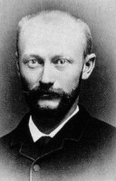
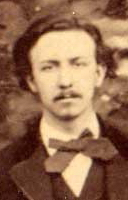
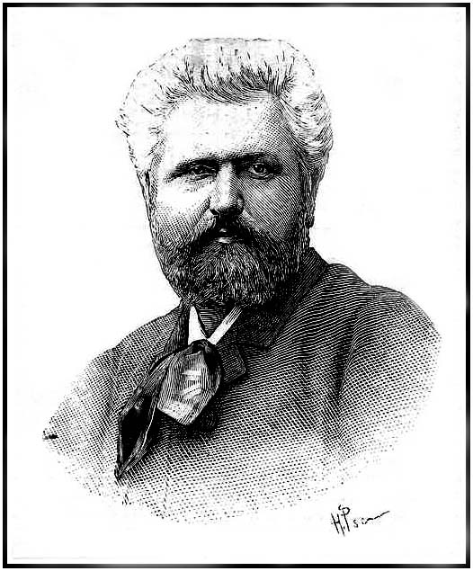

However, the original idea for the tower came mainly from two engineers who worked for Eiffel’s company: Maurice Koechlin and Émile Nouguier. In 1884, they developed an early plan for a tower about 300 meters high. Their design included four large iron supports that would come together as the tower became higher. At first, Gustave Eiffel was not completely enthusiastic about the design. The architect Stephen Sauvestre was asked to improve its appearance. He added architectural and decorative features that made the tower more attractive. After these changes, Eiffel became more interested in the project and strongly supported it. There were also hundreds of workers involved in producing and assembling the iron pieces used to construct the tower. Their work required great precision because thousands of different pieces had to fit together correctly.


